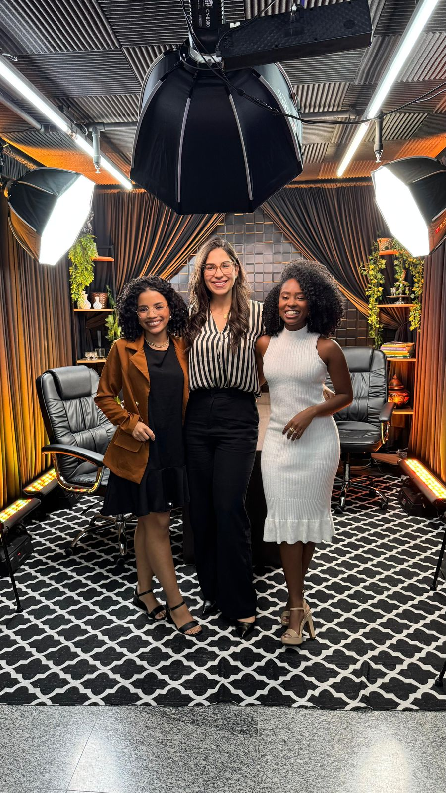
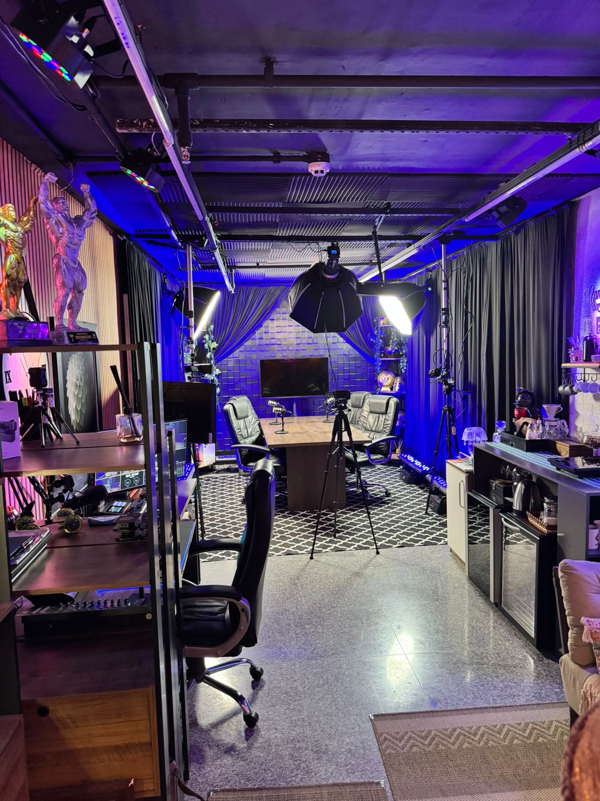

HISTÓRIAS BEM CONTADAS
GERAM PRESENÇA.
Podcast estratégico para empresárias e profissionais que desejam fortalecer posicionamento, autoridade e percepção de valor através de conversas conduzidas com intenção e direção estratégica.

MAIS DO QUE UMA ENTREVISTA
No Isso Daria um Podcast, cada episódio é conduzido estrategicamente para transformar histórias, experiências e conhecimentos em conversas com mais presença, conexão e posicionamento.
Nosso foco é conduzir episódios que fortaleçam autoridade, aumentem percepção de valor e aproximem marcas do público de forma natural e estratégica.
Porque hoje, não basta apenas ter uma boa trajetória.
A forma como ela é comunicada influencia diretamente na maneira como sua marca é percebida.
CONTEÚDO COM INTENÇÃO E DIRECIONAMENTO
Antes de cada gravação
- entendimento da convidada
- posicionamento desejado
- público que deseja atrair
- histórias que fortalecem sua marca
- temas com maior potencial de conexão
A partir disso
- direção do episódio
- narrativa
- construção da conversa
- posicionamento
- cortes estratégicos
- comunicação alinhada ao objetivo da marca
UMA CONVERSA COM PROPÓSITO
Durante o episódio, conduzimos a conversa estrategicamente para gerar profundidade, clareza e conexão.
Nosso papel é ajudar a convidada a desenvolver histórias relevantes, aprofundar temas importantes e construir autoridade de forma natural.

UM ESPAÇO QUE COMUNICA PRESENÇA
Nosso estúdio foi pensado para transmitir sofisticação, credibilidade e profissionalismo.
Cada detalhe do ambiente contribui para valorizar a imagem, a comunicação e a presença da convidada.
MISSÃO
Transformar histórias, experiências e conhecimentos em episódios estratégicos com posicionamento e conexão.
VISÃO
Ser referência em podcasts estratégicos para empresárias e profissionais que desejam fortalecer autoridade e marca pessoal.
VALORES
- Intencionalidade
- Excelência
- Humanização
- Credibilidade
- Estratégia
NOSSOS PACOTES
ESSENTIAL
- 1 episódio de até 30 minutos
- 3 cortes estratégicos verticais
- legendas nos cortes
- mini alinhamento estratégico pré-gravação
- divulgação no Instagram do podcast
SIGNATURE
- 1 episódio de até 30 minutos
- 7 cortes estratégicos verticais
- legendas nos cortes
- alinhamento estratégico pré-gravação
- construção estratégica da conversa
- divulgação no Instagram do podcast
- gift box exclusiva
TRIMESTRAL
Ideal para profissionais que desejam fortalecer presença digital e construir autoridade com constância.
- 6 episódios de até 30 minutos
- 4 cortes estratégicos por episódio
- total de 24 cortes verticais
- legendas nos cortes
- alinhamento estratégico antes de cada gravação
- direcionamento de narrativa e posicionamento
Alinhamento
Entendimento do posicionamento, objetivos e público.
Direcionamento
Definição dos temas e narrativa estratégica do episódio.
Gravação
Condução estratégica da conversa com foco em posicionamento.
Entrega
Envio do episódio e cortes prontos para utilização.
Hoje, qualquer pessoa pode gravar um podcast.
Poucas sabem transformar uma conversa em percepção de valor.
No Isso Daria um Podcast, o objetivo não é apenas registrar uma história.
É conduzir conversas que fortaleçam presença, posicionamento e autoridade.
Porque no mercado atual, não basta apenas ser boa no que faz.
As pessoas precisam perceber isso.